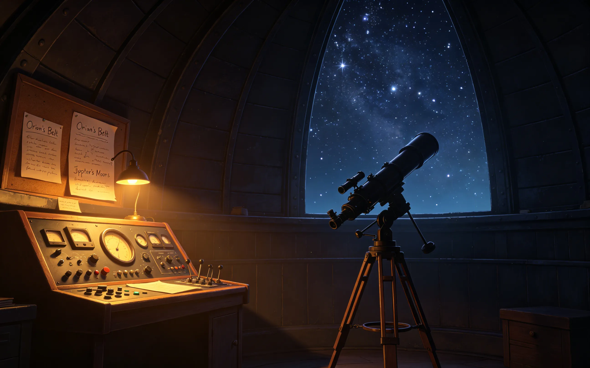

he woke up before the sun.
not unusual. he didn't sleep much. two hundred years of watching the stars had trained his body to expect darkness. but today, he had a reason.
the observatory had a telescope. not the big one — the small one, the one no one used because it wasn't calibrated. he'd spent the last three nights fixing it.
there was a star. not a famous one. not one you'd find in any textbook. he'd discovered it himself, decades ago, when he was still learning which stars were which. he'd never named it. never told anyone.
today, he decided, he would name it after her.

he spent the morning calculating coordinates. writing them down. erasing them. writing them again. he wanted it to be perfect.
by noon, he had a slip of paper in his pocket. small. folded twice. he touched it sometimes, when he thought no one was looking.
she came to the observatory that afternoon. not for him — she didn't know he'd be there. she was looking for a quiet place to read. the observatory was empty most days.
he watched her from the platform above. she sat in his chair. opened her book. didn't notice him.
he could have gone down. could have said something. could have handed her the paper and said "i named a star after you."
he didn't.
he stayed where he was. watched her read. watched the light change across her face.
when she left, he followed her with his eyes. then he took the paper out of his pocket. looked at it. folded it again. put it back.
he would tell her someday. maybe. if the words ever came.